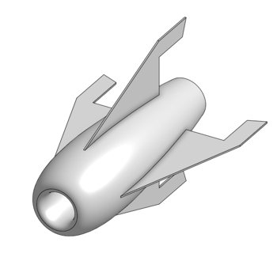
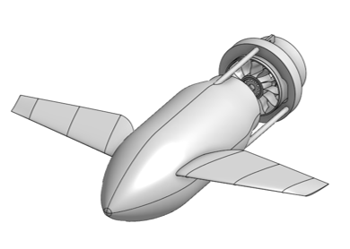
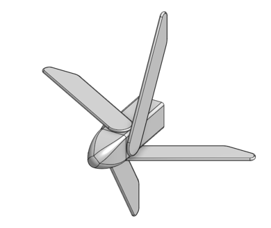
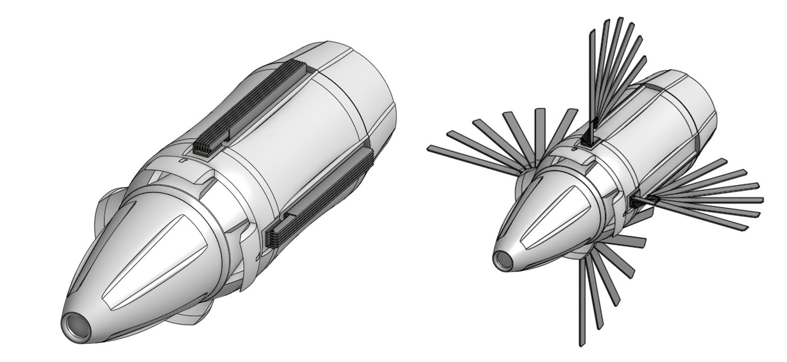
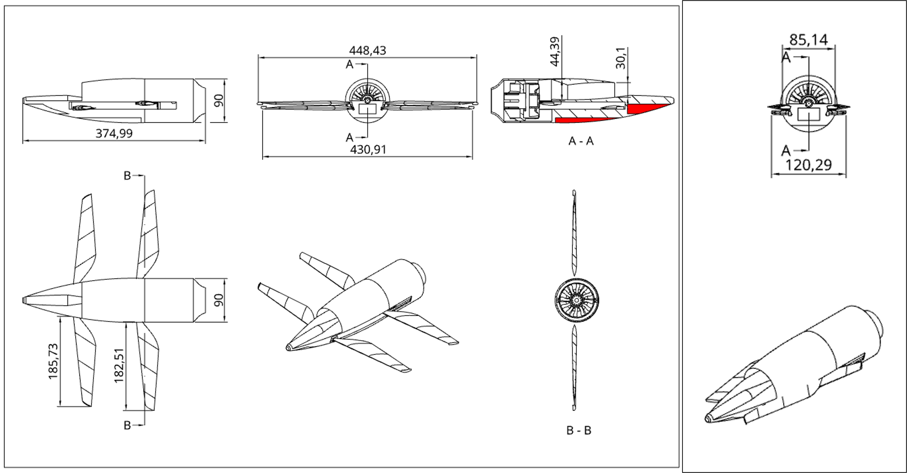
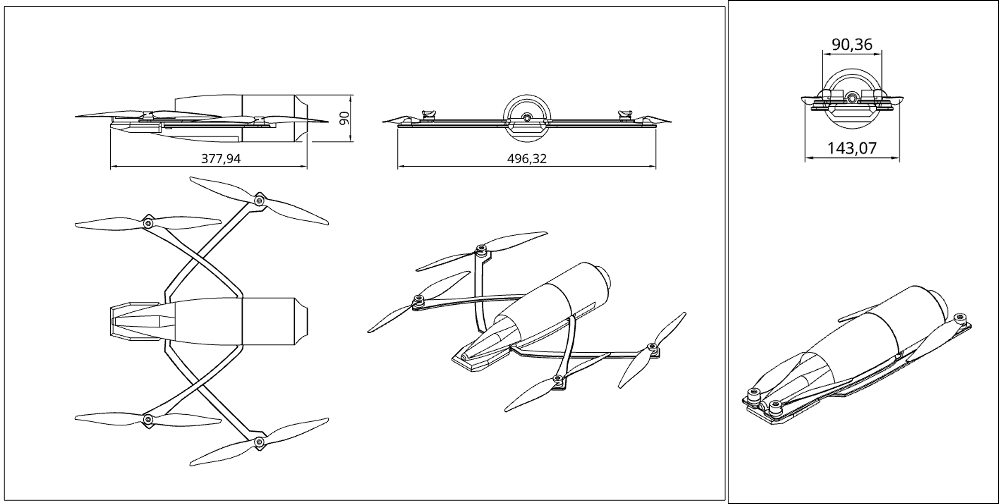
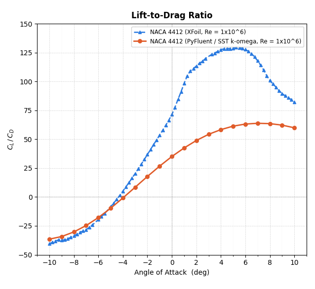
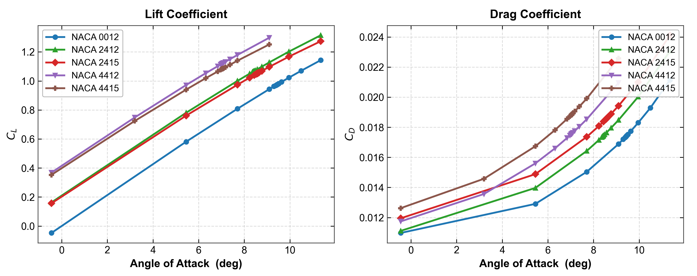

A multidisciplinary group project to design and optimise a pod-deployable UAV capable of fulfilling two contrasting mission profiles — a short-duration high-speed interception role and a long-endurance payload mission. The project integrated CFD aerodynamics, propulsion analysis, flight dynamics simulation, automated duct optimisation, and a physics-informed machine learning surrogate model into a unified engineering framework.
The core design challenge was to develop a single pod-deployable platform capable of fulfilling two fundamentally different missions. The competing requirements imposed conflicting constraints on aerodynamics, propulsion, packaging, stability, and control — making this a genuine multidisciplinary optimisation problem rather than a straightforward sizing exercise.
Four initial UAV configurations were developed and evaluated in ANSYS Fluent to assess external aerodynamics, flow separation, and EDF airflow delivery. A decision matrix combining drag force, manoeuvrability, and ease of manufacture identified the most promising baseline for further iteration. Elements from all four designs were then combined into a final modular hybrid geometry.

Central inflow duct feeding an EDF at the rear. Lowest drag of all four designs. Foldable wings with control surfaces. Limited to Mission 1 — any payload would be ingested by the EDF airflow.

Four large spring-deployable wings with coaxial propeller propulsion. High manoeuvrability and hover capability. Top speed limited by the coaxial configuration — not suited to Mission 1.

Two-part segmented body with NACA 0010 folding wings and rear EDF. Electronics forward, EDF aft. Blunt nose caused significant flow separation — highest drag of all four configurations.

Modular design with swappable front and rear sections for dual-mission use. Four tilting fan-wings in an X configuration. Complex ducts introduced separation and poor airflow delivery to the EDF.
Using Design 3 as the template and incorporating effective elements from all concepts, a final hybrid design was developed. Mission 1 uses a streamlined converging body with a central semi-circular inflow duct feeding an EDF. Mission 2 swaps the EDF section for a payload module and uses four APC 11x6 folding propellers for hover and cruise. Both configurations share the same core structure and fold within the pod deployment diameter constraint.


Before aerofoil selection could proceed, the PyFluent CFD framework was validated against XFoil panel method predictions for the NACA 4412 at Re = 1×10&sup6;. Lift coefficient predictions showed close agreement throughout the linear regime, with maximum discrepancy below 5%. Drag was over-predicted by approximately 60% relative to XFoil — expected given the fully turbulent SST k-ω assumption versus XFoil’s integral boundary layer formulation.
Four optimisation algorithms were compared for identifying the peak lift-to-drag ratio across the NACA 4412 polar — Newton-Raphson, Golden Section Search (GSS), Adjoint with Barzilai-Borwein steps, and Newton-Krylov. All four converged to an optimal angle of attack in the range 7.01°–7.36°. GSS was selected as the preferred algorithm — it identified the global best CL/CD = 63.854 at α = 7.047° using only 15 solver evaluations, with no gradient information required.
Five NACA profiles were then evaluated using the validated GSS framework. The NACA 4412 was selected for the main wing — highest CL/CD of all profiles, with 4% camber producing a favourable pressure gradient and the most desirable stall characteristics for a manoeuvrable platform.


| Algorithm | α* [°] | CL/CD* | Evals |
|---|---|---|---|
| Newton-Raphson | 7.10 | 63.768 | 6 |
| Golden Section Search | 7.047 | 63.854 | 15 |
| Adjoint (BB + Armijo) | 7.01 | 63.852 | 22 |
| Newton-Krylov | 7.36 | 63.778 | 12 |
Ammonium Perchlorate Composite Propellant (APCP) solid propellant was investigated as an alternative propulsion system for Mission 1. Three burn stages — beginning, middle, and end — were simulated using a density-based k-ω SST solver with the energy equation active, with mass flow inlets applied to the propellant burn area surfaces at each stage.
Solid propellant offered substantially higher thrust at every burn stage, with predicted maximum velocities exceeding 300 m/s. However, critical limitations were identified: no throttle control after ignition, extreme thermal loads approaching 3000 K requiring sacrificial liner materials, and recirculating stagnant air causing instability near the nozzle exit.
Despite the performance advantage, the EDF configuration was selected for the final design — it better satisfies manoeuvrability, operational flexibility, and mission robustness, with ESC throttle control enabling course correction after launch.
| Burn Stage | Thrust (N) | Predicted Vmax (m/s) |
|---|---|---|
| Beginning | 30.91 | 133.4 |
| Middle | 101.97 | 219.6 |
| End | 174.64 | 301.1 |
IMAGE: Figure 44 from report — Velocity contours at beginning, middle, and end burn stages
IMAGE: Figure 45 from report — Temperature contours at beginning, middle, and end burn stages
A 2D geometry optimisation framework was developed to improve air delivery to the EDF fan-face by systematically modifying the internal duct walls and evaluating each candidate geometry using CFD. The objective was to maximise fan-face mass flow rate while tracking total pressure recovery across the duct passage. The entire workflow from geometry generation through to post-processing was automated in Python, allowing a large number of candidate designs to be evaluated without manual intervention.
Six design variables were defined — three for the upper internal wall and three for the lower wall, corresponding to fore, mid, and aft regions of the duct passage. Each variable represents a local wall displacement relative to the baseline geometry. Wall perturbations are imposed using Bernstein-based shape functions that vanish identically at the segment endpoints, guaranteeing the perturbed wall meets the unmodified geometry continuously at its boundaries.
The perturbed wall profile is defined as y(t) = y₀(t) + x_fore·b₁(t) + x_mid·b₂(t) + x_aft·b₃(t), where t is the normalised arc-length parameter. Positive values open the wall outward; negative values move it inward.
IMAGE: Figure 16 from report — Cross-sectional view of duct and EDF area
IMAGE: Figure 17 — Baseline duct with regions highlighted
IMAGE: Figure 18 — Design variables labelled
IMAGE: Figure 19 from report — Generated 2D mesh on baseline
Candidate designs where the minimum wall gap falls below a prescribed tolerance are rejected before simulation, preventing wasted compute on infeasible geometries.
Design variables are mapped onto the upper and lower wall regions via the Bernstein shape functions. The modified point-cloud cross-section is written automatically.
A consistent unstructured 2D triangular mesh is applied with local refinement at the inlet, fan-face plane, and wall boundaries, ensuring fair comparison across all candidate geometries.
Steady RANS with k-ω SST. Inlet at 70 m/s (Mission 1 condition). Fan-face at 0 Pa gauge pressure outlet. Turbulence intensity 5%, viscosity ratio 10%.
Fan-face mass flow is extracted as the tail-mean over the final 10% of iterations. The coordinate search updates the incumbent if sufficient improvement is found, then reduces step size when no further improvement is possible.
The staged coordinate search identified progressive improvements across 221 evaluations before convergence. The objective rose 14.7% from 2.348 kg/s to 2.693 kg/s at the fan-face, with total pressure recovery improving 27.2% (0.621 to 0.790). The optimised geometry is characterised by inward displacement of the lower wall sections, indicating that lower wall shaping had the greatest aerodynamic influence.
| Metric | Baseline | Optimised | Change |
|---|---|---|---|
| Mass flow (kg/s) | 2.348 | 2.693 | +14.7% |
| Pressure recovery | 0.621 | 0.790 | +27.2% |
| Design Variable | Baseline | Optimised (mm) |
|---|---|---|
| Upper fore | 0.0 | +2.375 |
| Upper mid | 0.0 | +2.6875 |
| Upper aft | 0.0 | +0.0625 |
| Lower fore | 0.0 | −8.0 |
| Lower mid | 0.0 | −8.0 |
| Lower aft | 0.0 | −5.3125 |
IMAGE: Figure 30 from report — Optimisation convergence history
IMAGE: Figure 31 from report — Baseline vs optimised wall profiles
IMAGE: Figure 32 — Velocity magnitude contours baseline vs optimised
IMAGE: Figure 33 — Static pressure contours baseline vs optimised
IMAGE: Figure 34 — Turbulent kinetic energy baseline vs optimised
The final Mission 1 design was simulated with the EDF at four RPM settings (20,000, 40,000, 60,000, and 75,600 RPM) at a freestream velocity of 70 m/s. At 75,600 RPM, the EDF produces 72.47 N of thrust. Body drag at 70 m/s is 9.44 N, giving a predicted top speed of 193.98 m/s — far exceeding the 100 m/s design requirement.
| RPM | Thrust (N) |
|---|---|
| 20,000 | 2.336 |
| 40,000 | 7.059 |
| 60,000 | 22.972 |
| 75,600 | 72.474 |
IMAGE: Figure 37 — Mission 1 midplane + Q-criterion flow field
IMAGE: Figure 38 — Static pressure contour Mission 1
The Mission 2 configuration uses four APC 11×6 propellers simulated at 12,000 RPM with a 3 m/s inlet velocity. Rear propellers produce 7.7 N thrust each; front propellers produce 7.3 N due to wake interaction. Total vertical thrust of 30.1 N was recorded — insufficient for stable hover with the full 3 kg payload. A payload reduction to 1–2 kg, or larger propellers, would be required to meet the full Mission 2 specification.
IMAGE: Figure 39 — Mission 2 velocity and pressure iso-surfaces
A MATLAB/Simulink six-degree-of-freedom flight simulation model was assembled to evaluate whether the CFD-derived aerodynamic and propulsion data could support steady flight and manoeuvring across the operating envelope. The model assembles aerodynamic lookup tables into a rigid-body 6-DOF formulation with a Newton-style trim solver and local linearisation at each operating point.
A batch trim campaign covered four study types: baseline cruise (Nz = 1.0g), overload sweep (Nz = 1.0, 1.5, 2.0g), sideslip sweep (β = 0°, 5°, 10°), and linear stability analysis — all over 40–105 m/s. All 70 operating points converged with a maximum trim residual of 8.6×10⁻¹&sup0;. Baseline cruise requires consistently high pitch command and large trimmed angles of attack. At low speed with Nz = 2.0, angles of attack approach 69°.
IMAGE: Figure 40 — Longitudinal trim response for cruise and overload cases
Local state-space matrices were generated at every trim point by finite-difference linearisation of the nonlinear Simulink model. Open-loop eigenvalue analysis shows the configuration is not passively stable — the maximum real part of the eigenvalues ranges from 8.64 to 25.83 for the baseline cruise case. Active feedback control is required for a practical implementation.
A practical flight implementation would require a scheduled feedback control system with pitch, yaw, and thrust scheduling based on the trimmed operating point.
IMAGE: Figure 43 — Open-loop eigenvalue trends
To accelerate future design iteration, a physics-informed machine learning surrogate was developed — a Dynamic Graph Convolutional Neural Network (DGCNN) combined with a FiLM-conditioned SIREN field head (PIDGCNN), trained to predict aerodynamic scalar forces and full mid-plane flow fields from surface point cloud geometry and operating condition inputs.
Three EdgeConv blocks process the input surface point cloud (4,096 points, 8 features each) with a dynamically recomputed k-nearest-neighbour graph (k = 20) at each block. Dynamic re-graphing in feature space allows the encoder to handle parametric geometry inputs without remeshing.
A Fourier positional encoder lifts mid-plane query coordinates into a 63-dimensional representation to break spectral bias. The global geometry-condition embedding modulates each SIREN layer via learned additive FiLM shifts, leaving the SIREN weight initialisation intact.
Phase 1 trains the full model end-to-end. The scalar head converges reliably while the field head stalls. Phase 2 freezes the encoder and scalar head, re-initialises the field head, and fine-tunes with a spatially weighted loss. Field loss decreases by three orders of magnitude.
On the 20-sample proof-of-concept dataset, the scalar head achieves near-perfect accuracy — MAE of 4.24×10⁻³ N (0.46%) for thrust and 1.80×10⁻² N (0.47%) for drag. R² = 1.0000 for both channels.
IMAGE: Figure 49 — Drag and thrust parity plots
The surrogate recovers the dominant pressure topology with R² = 0.896 (nRMSE = 5.40%). Velocity magnitude achieves R² = 0.874 (nRMSE = 7.64%). The high-speed EDF jet core, fuselage recirculation zones, and quiescent far-field are faithfully reproduced.
| Output | nRMSE (%) | R² |
|---|---|---|
| Static pressure | 5.40 | 0.896 |
| Streamwise velocity u | 7.17 | 0.823 |
| Lateral velocity v | 4.85 | 0.939 |
| Vertical velocity w | 8.91 | 0.694 |
| Velocity magnitude | 7.64 | 0.874 |
IMAGE: Figure 50 — Mid-plane static pressure: CFD vs surrogate vs residual
IMAGE: Figure 51 — Mid-plane velocity magnitude: CFD vs surrogate vs residual
While solid propellant offers substantially higher peak thrust, the EDF configuration better satisfies manoeuvrability and mission robustness. The hybrid modular design concept successfully served both missions with manageable compromises.
The automated duct optimisation framework demonstrated that CFD can serve as a design tool rather than only an analysis method. The parametrised coordinate search delivered a 14.7% increase in fan-face mass flow and a 27.2% improvement in total pressure recovery without gradient information.
The trim campaign confirmed the design is mathematically flyable but requires active feedback control. The PIDGCNN surrogate achieved single-digit normalised RMSE on flow field prediction, demonstrating the feasibility of physics-informed ML as a design accelerator.
The project demonstrated the feasibility of the pod-deployable UAV concept and highlighted how integrating CFD, flight dynamics, and machine learning within a unified design framework enables multidisciplinary design assessment that would be impractical through any single discipline alone.